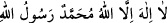

el-Mesâbîh’ta Fudâle b. Ubeyd (r.a.)’dan rivâyet edildiğine göre o şöyle demiştir:
Bir adam Rasûlullah (s.a.)’in mescidine girdi ve namaz kıldı. Ardından “Allâh’ım beni
bağışla, bana merhamet et.” diye duâ etti. Rasûlullah (s.a.) “Ey Namaz kılan kişi, acele
ettin. Namazın bitirip oturduğun zaman Allâh’a lâyık olduğu şekilde hamdet ve bana
salevât getir. Sonra Allâh’a duâ et.” buyurdu. Râvî der ki: “Daha sonra başka bir adam
namaz kıldı. Ardından Allah Teâlâ’ya hamd etti ve Hz. Peygamber (s.a.)’e salevât
getirdi. Hz. Peygamber (s.a.) ona da: “Ey Namaz kılan, duâ et ki icâbet olunsun.”
buyurdu.[304]
Yine bir hadîste şöyle buyrulmuştur: “Hz. Peygamber (s.a.)’e ve âilesine salevât
getirilinceye kadar yapılan her duâ ile Allah arasında bir perde vardır. Salevât
getirilince bu perde kalkar ve duâ içeri girer. Salevât getirilmezse duâ kapıdan geri
döner.”[305] Bu rivâyet er-Ravza’da zikredilmiştir. Böyle olmasının sırrı ise geride
geçen şu husustur: Peygamberimiz (a.s.) bizimle Allah Teâlâ arasında bir vâsıta ve
vesîledir. Bir şeyi taleb etmeden önce vesîleyi öne almak ise zarûrîdir. Allah Teâlâ
şöyle buyurmuştur: “Ey îman edenler! Allahtan korkun O’na yaklaşmaya vesîle/yol
arayın.” (el-Mâide, 5/35)
O’na salevât rehberliği olmaksızın yapılan hiçbir duâ
Kesinlikle kabule mazhar olmaz.
Âdem (a.s.)’da duâ ve tevbesinin kabul edilmesi için İki Cihanın Efendisi’ni vesîle
kılmıştır. Nitekim bir hadîste şöyle gelmiştir: “Âdem (a.s.) hatâsını îtiraf ettiği zaman
“Yâ Rab! Muhammed hakkı için senden beni bağışlamanı istiyorum” dedi. Allah
Teâlâ: “Ey Âdem, ben henüz O’nu yaratmadığım halde sen Muhammed’i nasıl
tanıdın/nereden bildin?” Âdem (a.s.): “Yâ Rabbi, sen beni kudret elinle yaratıp bana
kendi ruhundan üflediğin zaman başımı kaldırdım ve arşın direklerinin üzerinde “__WORD__” diye yazılı olduğunu gördüm. İşte o zaman senin ismine, ancak
yarattıklarından sana en sevgili olanının ismini izafe ettiğini anladım.” dedi. Allah
Teâlâ: “Ey Âdem, doğru söyledin. O mahlûkâtın bana en sevgilisidir. Bu yüzden seni
bağışladım. Eğer Muhammed olmasaydı, seni de yaratmazdım.” buyurdu.”[306] Bu
rivâyeti Beyhakî Delâil’inde zikretmiştir.
Sen Âdem neslindensin, ancak Âdem’den daha üstünsün.
Şüphe yok ki inci onu saklayan sedeften daha değerlidir.
Hakk’ın katında, nebiler sultanı olan Efendimiz gibi
Kimse izzet ve şerefe ermemiştir.
8- Cenaze namazında ikinci tekbirden sonra salevât getirilir. Bu, İmam Ebû Hanîfe ve
Mâlik’e göre müstehab, İmam Şâfiî ve Ahmed b. Hanbel’e göre ise vâcibdir.
9- Aynı şekilde cuma hutbesinde salevât getirmenin hükmü, imamlar arasında